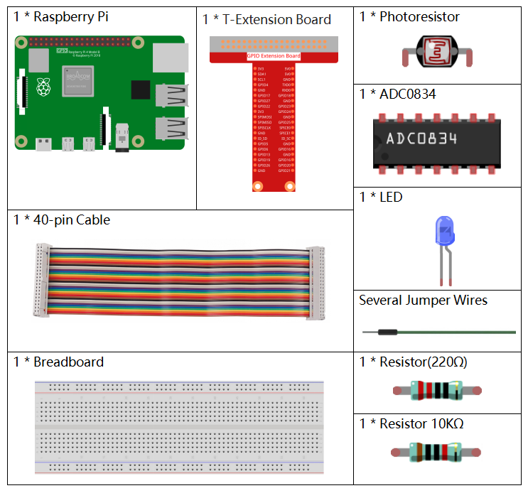
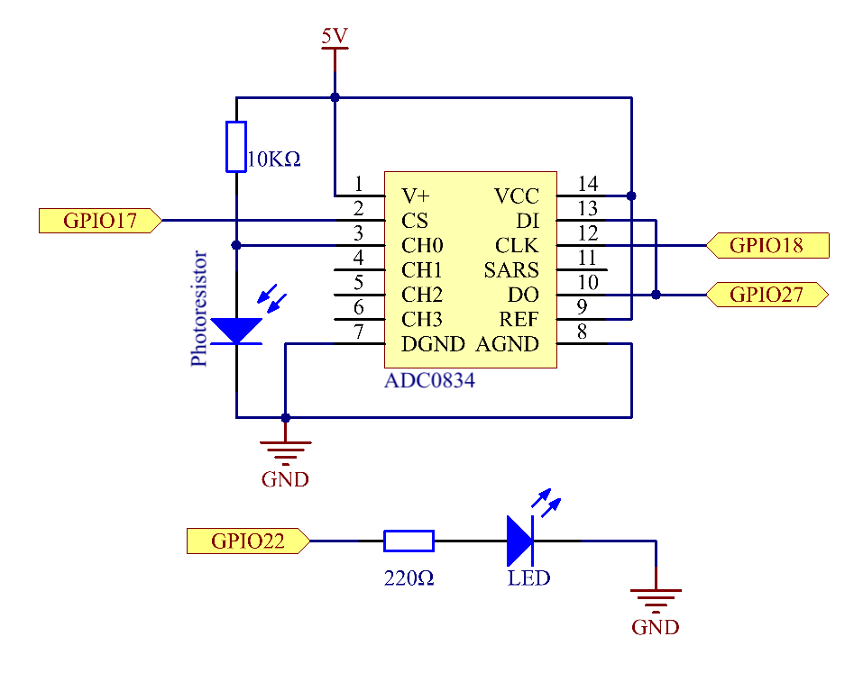
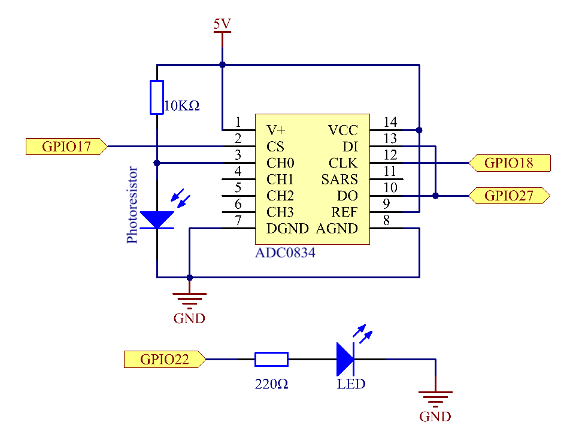

Nota
Hola, ¡bienvenido a la comunidad de entusiastas de SunFounder Raspberry Pi & Arduino & ESP32 en Facebook! Profundiza en Raspberry Pi, Arduino y ESP32 junto a otros entusiastas.
¿Por qué unirte?
Soporte Experto: Resuelve problemas postventa y desafíos técnicos con la ayuda de nuestra comunidad y equipo.
Aprende y Comparte: Intercambia consejos y tutoriales para mejorar tus habilidades.
Acceso Exclusivo: Obtén acceso anticipado a nuevos anuncios de productos y adelantos.
Descuentos Especiales: Disfruta de descuentos exclusivos en nuestros productos más nuevos.
Promociones y Sorteos Festivos: Participa en sorteos y promociones especiales de temporada.
👉 ¿Listo para explorar y crear con nosotros? Haz clic en [Aquí] y únete hoy.
2.2.1 Fotorresistor
Introducción
El fotorresistor es un componente comúnmente utilizado para medir la intensidad de la luz ambiental. Ayuda al controlador a distinguir entre el día y la noche, permitiendo funciones de control de luz como la lámpara nocturna. Este proyecto es muy similar al del potenciómetro, solo que aquí se detecta la luz en lugar de ajustar el voltaje.
Componentes
Principio
Un fotorresistor o fotocelda es un resistor variable controlado por la luz. La resistencia de un fotorresistor disminuye al aumentar la intensidad de la luz incidente; en otras palabras, exhibe fotoconductividad. Un fotorresistor se puede usar en circuitos de detección sensibles a la luz, así como en circuitos activados por luz o por oscuridad.

Diagrama Esquemático
 

Procedimientos Experimentales
Paso 1: Monta el circuito.

Para Usuarios de Lenguaje C
Paso 2: Ve a la carpeta del código.
cd ~/davinci-kit-for-raspberry-pi/c/2.2.1/
Paso 3: Compila el código.
gcc 2.2.1_Photoresistor.c -lwiringPi
Paso 4: Ejecuta el archivo ejecutable.
sudo ./a.out
Al ejecutar el código, el brillo del LED variará según la intensidad de la luz detectada por el fotorresistor.
Nota
Si no funciona después de ejecutarlo, o aparece un mensaje de error: "wiringPi.h: No such file or directory», consulta c code is not working?.
Código
#include <wiringPi.h>
#include <stdio.h>
#include <softPwm.h>
typedef unsigned char uchar;
typedef unsigned int uint;
#define ADC_CS 0
#define ADC_CLK 1
#define ADC_DIO 2
#define LedPin 3
uchar get_ADC_Result(uint channel)
{
uchar i;
uchar dat1=0, dat2=0;
int sel = channel > 1 & 1;
int odd = channel & 1;
digitalWrite(ADC_CLK, 1);
delayMicroseconds(2);
digitalWrite(ADC_CLK, 0);
delayMicroseconds(2);
pinMode(ADC_DIO, OUTPUT);
digitalWrite(ADC_CS, 0);
// Bit de inicio
digitalWrite(ADC_CLK,0);
digitalWrite(ADC_DIO,1); delayMicroseconds(2);
digitalWrite(ADC_CLK,1); delayMicroseconds(2);
// Modo de terminación simple
digitalWrite(ADC_CLK,0);
digitalWrite(ADC_DIO,1); delayMicroseconds(2);
digitalWrite(ADC_CLK,1); delayMicroseconds(2);
// ODD
digitalWrite(ADC_CLK,0);
digitalWrite(ADC_DIO,odd); delayMicroseconds(2);
digitalWrite(ADC_CLK,1); delayMicroseconds(2);
// Selección
digitalWrite(ADC_CLK,0);
digitalWrite(ADC_DIO,sel); delayMicroseconds(2);
digitalWrite(ADC_CLK,1);
digitalWrite(ADC_DIO,1); delayMicroseconds(2);
digitalWrite(ADC_CLK,0);
digitalWrite(ADC_DIO,1); delayMicroseconds(2);
for(i=0;i<8;i++)
{
digitalWrite(ADC_CLK,1); delayMicroseconds(2);
digitalWrite(ADC_CLK,0); delayMicroseconds(2);
pinMode(ADC_DIO, INPUT);
dat1=dat1<<1 | digitalRead(ADC_DIO);
}
for(i=0;i<8;i++)
{
dat2 = dat2 | ((uchar)(digitalRead(ADC_DIO))<<i);
digitalWrite(ADC_CLK,1); delayMicroseconds(2);
digitalWrite(ADC_CLK,0); delayMicroseconds(2);
}
digitalWrite(ADC_CS,1);
pinMode(ADC_DIO, OUTPUT);
return(dat1==dat2) ? dat1 : 0;
}
int main(void)
{
uchar analogVal;
if(wiringPiSetup() == -1){ // cuando la inicialización de wiring falla, muestra mensaje en pantalla
printf("setup wiringPi failed !");
return 1;
}
softPwmCreate(LedPin, 0, 100);
pinMode(ADC_CS, OUTPUT);
pinMode(ADC_CLK, OUTPUT);
while(1){
analogVal = get_ADC_Result(0);
printf("Current analogVal : %d\n", analogVal);
delay(100);
softPwmWrite(LedPin, analogVal);
delay(100);
}
return 0;
}
Explicación del Código
Los códigos aquí son los mismos que en 2.1.4 Potenciómetro. Si tienes alguna otra pregunta, consulta la explicación del código de 2.1.4 Potentiometer.c para obtener detalles.
Para Usuarios de Python
Paso 2: Ve a la carpeta del código.
cd ~/davinci-kit-for-raspberry-pi/python/
Paso 3: Ejecuta el archivo ejecutable.
sudo python3 2.2.1_Photoresistor.py
Al ejecutar el código, el brillo del LED variará según la intensidad de la luz detectada por el fotorresistor. Código
Nota
Puedes Modificar/Restablecer/Copiar/Ejecutar/Detener el código a continuación. Pero antes, debes ir a la ruta del código fuente como davinci-kit-for-raspberry-pi/python.
import RPi.GPIO as GPIO
import ADC0834
import time
LedPin = 22
def setup():
global led_val
# Configurar el modo GPIO en numeración BCM
GPIO.setmode(GPIO.BCM)
# Configurar el modo de LedPin como salida y nivel inicial alto (3.3v)
GPIO.setup(LedPin, GPIO.OUT, initial=GPIO.HIGH)
ADC0834.setup()
# Configurar led como canal pwm y frecuencia a 2KHz
led_val = GPIO.PWM(LedPin, 2000)
# Iniciar con valor 0
led_val.start(0)
def destroy():
# Detener todos los canales pwm
led_val.stop()
# Liberar recursos
GPIO.cleanup()
def loop():
while True:
analogVal = ADC0834.getResult()
print ('analog value = %d' % analogVal)
led_val.ChangeDutyCycle(analogVal*100/255)
time.sleep(0.2)
if __name__ == '__main__':
setup()
try:
loop()
except KeyboardInterrupt: # Cuando se presiona 'Ctrl+C', se ejecutará destroy()
destroy()
Explicación del Código
def loop():
while True:
analogVal = ADC0834.getResult()
print ('analog value = %d' % analogVal)
led_val.ChangeDutyCycle(analogVal*100/255)
time.sleep(0.2)
Lee el valor analógico de CH0 de ADC0834. Por defecto, la función getResult() se usa para leer el valor de CH0, así que si deseas leer otros canales, debes ingresar 1, 2 o 3 en el parámetro de la función getResult(). Luego, imprime el valor con la función print. Dado que el elemento variable es el ciclo de trabajo de LedPin, se utiliza la fórmula de cálculo analogVal*100/255 para convertir analogVal en porcentaje. Finalmente, se llama a ChangeDutyCycle() para escribir el porcentaje en LedPin.